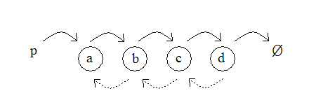

GEL2 is an experimental general-purpose object-oriented programming language. GEL2 is essentially a subset of C#, extended with an ownership-based type system which allows GEL2 to free memory safely and deterministically without using a garbage collector.
The language is large enough to write useful programs, such as the GEL2 interpreter/compiler itself. The language is primarily intended to demonstrate the viability of a type system based on ownership, and is missing a number of features common in practical object-oriented languages including interfaces, namespaces and exceptions. It would probably be relatively straightforward to extend GEL2 to include such features.
This document contains an overview and reference for the GEL2 language as implemented today.
The reference is relatively informal; if a feature is familiar from other high-level object-oriented languages such as Java and C#, we will often present it with minimal explanation. We do present a complete grammar for GEL2, and we attempt to provide a reasonably complete description of the type system and of type conversions, where GEL2's ownership types play a significant role.
GEL2's type system includes the notion of ownership: GEL2 distinguishes owning and non-owning pointers. The type system ensures that there is exactly one owning pointer to every object at any time. When an owning pointer is destroyed, the object it points to is destroyed as well. At run time, GEL2 keeps a count of non-owning pointers to each object. If a destroyed object's non-owning pointer count is non-zero, then a run-time error occurs and program execution terminates; it is the programmer's responsibility to avoid this condition.
Unlike languages with simple manual memory management schemes (such as malloc/free or new/delete), GEL2 is safe: a bug in a GEL2 program can never corrupt memory arbitrarily. Unlike garbage-collected languages, memory management in GEL2 is deterministic: objects are freed as soon as they are no longer needed, and user-written destructors run at predictable times. Unlike traditional reference-counting schemes, GEL2 can free data structures including cycles of pointers. GEL2's non-owning reference counts are also cheaper than traditional reference counts for a number of reasons as described below.
A pointer's compile-time type indicates whether the pointer owns the object it points to. At run time in a compiled GEL2 program, both owning and non-owning pointers are represented as ordinary (typically 32-bit) pointers.
Ownership of an object may transfer from one pointer to another as a program runs. GEL2's type system ensures that the single-owner property holds even as ownership of an object changes.
GEL2 destroys an object o as follows. First GEL2 runs the user-written destructor (if any) for o. Next GEL2 destroys all fields in o (in reverse lexical order); if these fields point to other objects then those objects will be destroyed as well. Finally GEL2 checks o's non-owning reference count. If the reference count is non-zero, GEL2 issues a run-time error and terminates the program; otherwise GEL2 frees the memory used to store o and continues execution.
A simple example will illustrate how ownership works in data structures in GEL2. Consider a doubly linked list:

In the image above, solid arrows indicate owning pointers and dotted arrows
indicate non-owning pointers. p is a local variable pointing
to the head of the list. Ø represents a null
pointer indicating the end of the list.
Suppose that the method invocation containing p exits so that
p goes out of scope. p owns a, so GEL2
will now destroy a. To do this, GEL2 will first run a's user
destructor if any. Next GEL2 will destroy b; in the process of
destroying b, c will be destroyed, and so on. As
b is destroyed, its non-owning pointer to a will be
destroyed and so a's non-owning reference count will drop to zero.
After b's destruction has completed, GEL2 will check that a's
non-owning reference count is zero and will free the memory used to store
a.
As this example illustrates, GEL2 can automatically destroy data structures in which parent nodes have owning pointers to children and child nodes have non-owning pointers to parents. The destruction process works similarly for more complex data structures such as trees. Note that a traditional reference-counted system would be unable to free these structures.
In GEL2, the type T ^ is an owning pointer to an object of type
T. A type written without a ^ character indicates a
non-owning pointer. Local variables, parameters, method return values and
object fields may all have owning or non-owning types.
Here's a minimal GEL2 program:
class Foo {
public static void Main() {
Foo ^f = new Foo();
}
}
The new operator returns an owning pointer. In this
program, the local variable f receives ownership of the newly
allocated object. When Main() exits and f goes
out of scope, GEL2 destroys the object automatically.
If an owning pointer is updated with a new value, any previously pointed-to object is destroyed immediately. For example:
void Fun() {
Foo ^f = new Foo(); // allocates a new Foo
f = new Foo(); // the first Foo allocated is destroyed here
f = null; // the second Foo allocated is destroyed here
...
}
Ownership may transfer between variables. For example:
void Fun() {
Foo ^f = new Foo();
Foo ^gel2 = f; // ownership transfers to GEL2
}
In GEL2 it is a compile-time error to read from any local variable which may have lost ownership:
void Fun() {
Foo ^f = new Foo();
Foo ^gel2 = f; // ownership transfers to GEL2
Foo h = f; // error: f has lost ownership
}
A local variable may lose ownership and then receive ownership of a new value. For example:
void Fun() {
Foo ^f = new Foo();
Foo ^gel2 = f; // ownership transfers to GEL2
f = new Foo();
}
Object fields may have either owning or non-owning type. Here's a definition in GEL2 for the doubly linked list class illustrated above, extended to hold an integer in each node:
class Node {
int i_;
public Node ^next_;
public Node prev_;
}
(Note that the trailing underscore in the field names above is not part of GEL2's syntax; these fields follow Google's convention that field names end in underscores.)
Method parameters and return values may also have owning or non-owning type.
If a method parameter has owning type, the method receives ownership
of the value passed in that parameter. If a return value has owning type,
the method gives ownership of the returned value back to the calling
method. To illustrate, let's add a constructor to the Node class above:
class Node {
int i_;
public Node ^next_;
public Node prev_;
public Node(int i, Node ^n, Node p) { i_ = i; next_ = n; prev_ = p; }
}
Here's a method which takes an integer k and returns a doubly linked list
containing the integers 1 through k:
static Node ^IntList(int k) {
Node ^n = null;
for (int i = 1 ; i <= k ; ++i) {
Node o = n; // keep a pointer to previous head of list
n = new Node(i, n, null);
if (o != null)
o.prev_ = n; // create backlink
}
return n;
}
In the line which calls the new Node() constructor, the owning
variable n first loses ownership of the object it points to, since
it passes that value to a constructor parameter with owning type: the
constructor takes ownership of the object passed. After the constructor
returns, n receives ownership of the newly allocated object.
If we attempt to replace that line with
n = new Node(i, o, null);
then we receive a compile-time error since an owning parameter must be passed an owning value:
test.gel2(16): error: Node: the best overloaded constructor match has some invalid arguments
test.gel2(16): error: argument 2: can't convert from Node to Node ^
Let's extend the Node class with a method Chop() which chops all nodes
following this off the list and returns an owning pointer to them:
Node ^Chop() {
if (next_ != null)
next_.prev_ = null;
return take next_;
}
The take operator takes ownership of a value from an owning
field. It has the side effect of setting the field's value to null,
which is necessary since the object being taken may have only a single owner.
If an expression reads an owning field without using take, then
it receives a non-owning pointer. If we modify the return
statement above to be just
return next_;
then we receive a compile-time error:
test1.gel2(13): error: can't convert Node to Node ^
GEL2 could conceivably take ownership from and null out owning fields
automatically whenever they're read in an owning context; then the take
operator would be unnecessary. But then the side effect of nulling out a
field would be much less apparent to programmers; GEL2 includes take
so that this side effect is explicit.
If take is applied to a pointer whose value is null,
then take returns null without error.
Note that take is generally unnecessary when taking ownership
from owning local variables and parameters; in this situation ownership
transfers automatically and the local or parameter's value becomes undefined
(reading it yields a compile-time error as discussed above). If take
is used with a local variable, the variable's value is set to null:
void Fun() {
Foo ^f = new Foo();
Foo ^gel2 = f; // ownership transfers to gel2; f is now undefined
Foo ^h = take gel2; // ownership transfers to h; gel2 is now null
}
It's possible for a GEL2 program to create cycles of owning pointers. The
following program creates two Bar objects which point to each
other:
class Bar {
Bar ^next_;
static void MakeACycle() {
Bar ^n = new Bar();
Bar ^o = new Bar();
Bar p = o;
n.next_ = o;
p.next_ = n;
}
}
These objects will never be destroyed. GEL2 only destroys structures containing no owning pointer cycles; this is a weaker guarantee than that provided by a garbage collector, which can destroy structures containing arbitrary pointer cycles.
But this hardly matters in practical programming. It's hard to create
an owning pointer cycle by mistake in GEL2, because the type system guarantees that
a programmer can't create an owning pointer cycle and return an owning pointer
to it. For example, if we modify the MakeACycle method above
to return a Bar ^ and add the line return n; at the
end of the method, we receive a compile-time error: we can't return n
because ownership has already transferred away from it (in the assignment to
p.next_).
All common data structures can be coded without using owning pointer cycles. For inherently circular structures such as a circular linked list, the GEL2 programmer must store all list nodes in a non-circular owning pointer list, and then either (a) create an additional circular set of non-owning pointers, or (b) imitate circular behavior by jumping back to the head of the list whenever a navigation past the end of the list is encountered. This is admittedly unnatural in GEL2, but inherently circular structures form only a small fraction of data structures encoutered in typical programs.
When a block of GEL2 code (such as a method body) finishes executing, all variables in the block are destroyed in reverse lexical order, i.e. in the reverse of the order in which they appear in the program text. Similarly, when a GEL2 object is destroyed, all fields in the object are destroyed in reverse lexical order. This means that the order in which variables or fields appear sometimes affects whether destruction will complete without error. Consider the following class:
class Bar {
public Bar next_; // automatically initialized to null
public static void Foo() {
Bar ^b = new Bar();
Bar ^c = new Bar();
c.next_ = b;
}
}
The Foo method will execute without error. Suppose that we
rewrite Foo as follows:
public static void Foo() {
Bar ^c = new Bar();
Bar ^b = new Bar();
c.next_ = b;
}
The program will now terminate with a run-time error: GEL2 tries to destroy
b
first, but b cannot be freed since its non-owning pointer count is 1 (c still
points to it).
Practically speaking, we've found that in most GEL2 programs objects are naturally destroyed without error; only occasionally have we had to rearrange variables or fields to ensure that destruction works properly.
GEL2 can automatically destroy any data structure in which every non-owning pointer from an object o points to an object which is an ancestor of o in the object ownership tree. Many common data structures such as the doubly linked list discussed above have this form. If a data structure contains non-owning pointers to non-ancestor nodes, then the programmer must write code to null out those pointers before the structure is destroyed.
As an exception to the above, after a GEL2 program's Main() method finishes
executing GEL2 destroys all remaining objects en masse: they may contain arbitrary
non-owning pointers. This means that a GEL2 programmer doesn't need to worry
about the order in which global variables are destroyed.
Type casts in GEL2 never affect whether a value is owned; a cast is always from an owning type to an owning type or from an non-owning type to an non-owning type. Syntactically, a cast is always written with a non-owning type, even if the value it affects is owning. Thus:
void Fun() {
Foo ^f = new Foo();
Bar ^b = (Bar) f; // f loses ownership to b here
}
The is and as operators in GEL2 are similarly always
written with non-owning types, even though they may operate on owning or non-owning values.
Type casts don't affect whether a value is owned, but GEL2 implicitly converts between owning and non-owning types in certain situations; see the Conversions section in the reference below.
GEL2 (like Java and C#) provides autoboxing: a simple value such an int
or bool may be stored in a variable holding an object. In GEL2,
a boxed value always has the owning type object ^. For
example:
void Fun() {
object ^o = 7; // ok
object p = false; // compile-time error: can't convert from bool to object
}
In an owning type T ^, T must not be a simple type;
the types int ^ and bool ^ do not exist in GEL2, for
example. An unboxing conversion must be explicit, and yields a simple
type:
void Fun() {
object ^o = 7;
int i = (int) o;
}
Strings in GEL2 are not owned; the type string ^ does not exist.
In a compiled GEL2 program, strings are internally reference counted; a string is
freed when its reference count reaches zero.
We thought about making strings owned in GEL2, but strings are so common in real-world programs that we thought it might burdensome for programmers to have to worry about string ownership. There's no problem with using classical reference counting for strings: they don't point to other objects so they can never be involved in a pointer cycle.
A string may be converted either to an object ^
or to an object:
void Fun() {
object ^o = "a"; // ok
object p = "b"; // ok
}
In GEL2 this is always a non-owning pointer:
class Foo {
static Foo ^f;
...
void Fun() {
f = this; // compile-time error: can't convert from Foo to Foo ^
}
}
In GEL2 an array may hold either owning or non-owning pointers:
void Fun() {
Foo [] ^a = new Foo[5]; // an array of non-owning pointers to Foo objects
Foo ^[] ^b = new Foo^[5]; // an array of owning pointers to Foo objects
b[0] = new Foo();
a[0] = b[0];
}
The take operator may operate on array elements:
void Fun() {
Foo ^[] ^a = new Foo^[5];
a[0] = new Foo();
Foo ^f = take a[0];
}
There is no array covariance at all in GEL2 as of yet; this means that it's not
possible, for example, to write a method which can accept either a Foo [] or a Foo ^ []
as a parameter.
GEL2's reference counts are far cheaper than those in a traditional reference-counted system, for three reasons:
GEL2 allows a program to allocate objects in several different ways: on the heap, from pools, on the stack, or embedded inside another object.
GEL2 supports memory pools. A pool can allocate objects of any type. Allocation from a pool is faster than allocating from the heap, but pool-allocated objects cannot be destroyed individually: all objects in a pool are destroyed en masse when the pool itself is destroyed.
Like all other allocation mechanisms in GEL2, pools are safe. GEL2 destroys a pool in two phases. In the first phase, GEL2 first destroys every object in the pool in reverse allocation order; GEL2 does not check objects' reference counts during this phase. In the second phase, GEL2 iterates over every destroyed object and checks that its reference count is zero. Even when this destruction process is taken into account, it is significantly faster to allocate a number of objects from a pool and then destroy the pool than it is to heap-allocate and destroy the same number of objects.
Pools in GEL2 have type pool. A pool can be allocated using
new:
pool ^p = new pool();
Objects can be allocated from a pool using the new operator:
Foo f = p.new Foo(3, 4);
Note that when allocating from a pool, new returns a non-owning
pointer: the pool itself owns the allocated object. This makes pools
especially convenient to use in GEL2: code that allocates objects from a pool can
manipulate those objects without using any ownership annotations whatsoever.
The GEL2 interpreter/compiler runs on Linux and on Windows. We've only tested that GEL2 works on relatively recent Ubuntu releases and on Windows XP. It should be straightforward to port GEL2 to other platforms.
The interpreter/compiler consists of a single executable named gel2 (on Linux) or gel2.exe
(on Windows):
% gel2
usage: gel2 <source-file> ... [args]
gel2 -c [-d] [-o <name>] [-u] [-v] [-cpp] <source-file> ...
-c: compile to native executable
-d: debug mode: disable optimizations, link with debug build of C runtime
-o: specify output filename
-u: unsafe: skip reference count checks
-v: verbose: display command used to invoke C++ compiler
-cpp: compile to C++ only
%
To run a GEL2 program using the interpreter, simply pass its filename on the command line:
% gel2 hello.gel2
hello world
%
To compile a GEL2 program to native code, use the -c flag:
% gel2 -c hello.gel2
% hello
hello world
%
A compiled GEL2 program should always produce the same output that the interpreter does when run on the same program. We're currently aware of a small number of bugs which may cause discrepancies in behavior between compiled and interpreter programs; we hope to fix these soon.
The GEL2 compiler works by generating C++ code, which it then feeds to the C++ compiler.
On Linux, GEL2 invokes the GCC C++ compiler, which GEL2 currently looks for only at/usr/bin/g++ . We've tested that GEL2 works with GCC 3.2 and
higher.
On Windows, GEL2 invokes Microsoft's Visual C++ compiler, which GEL2 looks for in the following locations:
c:\Program Files\Microsoft Visual Studio .NET 2002
c:\Program Files\Microsoft Visual Studio .NET 2003
c:\Program Files\Microsoft Visual Studio 8
At present GEL2 has been tested only with Visual Studio 2005; it may (or may not) work with Visual Studio .NET 2002 or 2003.
A GEL2 program may contain several source files:
% gel2 -c hello.gel2 hello2.gel2
% hello
hello world
%
The -d ("release") option tells the GEL2 compiler to compile in
debug mode: the generated code will be unoptimized and will be linked with
the debug version of the C runtime library.
The -o ("output") option specifies a base filename for the
output executable:
% gel2 -c -o zaza hello.gel2
% zaza
hello
%
The -u ("unsafe") option tells the GEL2 compiler not to keep
reference counts of non-owning pointers to each object. When a program is
built in unsafe mode, execution is slightly faster and memory usage is reduced,
but a bug may corrupt memory arbitrarily or cause the program to crash.
-u skips only reference count checks; other safety checks such as
array bounds checks are currently active in GEL2 even when -u is specified.
The -v ("verbose") option tells the GEL2 compiler to print the line
it uses to invoke the C++ compiler:
% gel2 -c -v test1.gel2
cl /nologo /MDd /Od /ZI test1.cpp user32.lib
%
On Windows, executables built with GEL2 depend only on the C run-time library DLL (this is MSVCR80.DLL when compiling with Visual Studio 2005); no additional GEL2 libraries or DLLs are needed at run time. A "hello, world" program built in release mode on Windows currently generates an executable approximately 32K in size.
We describe the syntax of GEL2 using a grammar. Non-terminal symbols are
in italics. Characters appearing literally in a program are in a
fixed-width font.
We define the set of productions for each non-terminal in the following way. The non-terminal appears first, followed by a colon; each following line is indented and contains a single production. Productions may be recursive: the non-terminal being defined may appear in its own productions.
If a non-terminal has many short productions, we may write ": one of" after the non-terminal and list all productions on a single following indented line. For example:
foo: one of
A B C
is the same as
foo:
A
B
C
When X is a non-terminal or terminal symbol,
A GEL2 source file consists of a series of ASCII characters.
GEL2 ignores comments in a source file. A single-line comment begins with
the characters // and extends to the next line terminator. A
block comment begins with the characters /* and extends to the the
next occurrence of the characters */ . A block comment may
contain multiple lines. Block comments do not nest.
letter:
an ASCII character in the range A-Z or a-z
digit: one of
0 1 2 3 4 5 6 7 8 9
underscore:
_
id-initial-char:
letter
underscore
id-char:
letter
digit
underscore
id:
id-initial-char id-char*
An identifier is a sequence of letters, digits and/or underscores and may not begin with a digit.
The following keywords are reserved in GEL2 and may not be used as identifiers:
abstract as base bool break case char class const continue default do
else extern false
for foreach if in int is new null object out override pool private protected public
readonly
ref return short static string switch take this true using virtual void while
boolean-literal:
true
false
digit: one of
0 1 2 3 4 5 6 7 8 9
hex-digit: one of
0 1 2 3 4 5 6 7 8 9 a b c d e f A B C D E F
integer-literal:
-opt digit+
0x hex-digit+
0X hex-digit+
An integer literal must represent a 32-bit integer i in the range -231 <= i < 231; otherwise a compile-time error results.
decimal-suffix: . digit+
sign: one of
+ -
exponent-part:
e signopt digit+
E signopt digit+
floating-point-suffix: one of
F f D d
floating-point-literal: digit* decimal-suffixopt exponent-partopt floating-point-suffixopt
A floating-point-literal represents a literal float or
double value, and must contain at least either a decimal-suffix,
an exponent-part or a floating-point-suffix. The suffixes
F and f denote a value of type float;
D and d denote a value of type double.
If no suffix is present, a floating-point literal is of type double.
literal-char:
any ASCII character other than ' or \
escape-char: one of
\' \" \\ \0 \n \r \t
character-literal:
' literal-char '
' escape-char '
string-char:
any ASCII character other than " or \
string-char-def:
string-char
escape-char
string-literal:
" string-char-def* "
null-literal:
null
predefined-type: one of
bool char double float int object string pool
concrete-type:
predefined-type
id
type []
type:
concrete-type
concrete-type ^
Types in GEL2 include concrete types and owning types.
Concrete types are arranged in a type hierarchy: every concrete type has a
parent type, with the exception of the object class and null type,
which have no parent types. A parent type is always a class type. We
say that T is derived from U, or that U is a superclass of
T, if either T's parent class is U or T's parent class is derived from U.
Every value in GEL2 has some concrete type. A value V of type T is an
instance of type U if T is U or if T is derived from U. Every value is
an instance of the object class, which forms the root of the type
hierarchy.
A concrete type may have members, which include fields, methods, constructors, destructors, properties, and indexers. Every type inherits the fields, methods, properties and indexers of its superclass: in many situations the language behaves as if those members were defined in the type itself. For more information about members, see the section Classes below.
Concrete types in GEL2 include simple types and reference types. Simple types hold small immutable values. In a compiled GEL2 program, variables with simple types contain values directly rather than holding pointers to them; variables with reference types hold pointers to values Most reference types, including user-defined class types and array types, are owned: every instance of these types has a single owner. The string type is an unowned reference type.
Every concrete type has a default value. The default value
of every reference type is null.
We generally use the term object to refer to instances of reference types.
Simple types are small and immutable. GEL2 defines three simple types
bool, int and char. The superclass of every simple type is the object class.
A bool holds either of the Boolean values true or
false . The default value of bool is false.
An int is a signed 32-bit integer. The default value of
int is 0.
A float is an IEEE 754 single-precision 32-bit floating number.
A double is an IEEE 754 double-precision 64-bit floating-point
number. A float or double may hold any of the
following values:
float) or 0 < m < 253 (for a
double)float) or -1075 <= e <= 970 (for a
double)A char is a 16-bit Unicode character. The default value of
char is '\0'.
A class type is a reference type. GEL2 predefines a number of class types
including the object class, which is the root of the type
hierarchy. The user may define additional classes as described in the
Classes section below.
For every type T (including owning types) GEL2 defines the array
type T [] . An array type is a reference type. The
superclass of every array type is the built-in class Array ; the
superclass of Array is the object class.
An array of type T [] holds a fixed-length array of variables of type T .
GEL2 does not (yet) implement any sort of array covariance; when T and U are different types, there is no implicit or explict conversion between T [] and U [].
A string holds a string of 16-bit Unicode characters.
Strings are immutable.
string is a reference type. The superclass of the string
class is the object
class.
In a compiled GEL2 program, strings are internally reference counted; creating a new reference to a string is a fast operation whose cost is independent of the length of the string. A string's reference count is not visible to the GEL2 programmer. A string is freed when its reference count reaches zero. Strings are the only type in GEL2 which are reference counted in this way.
A pool holds a set of objects which cannot be destroyed
individually: they are destroyed en masse when the pool itself is destroyed.
pool is a reference type. The superclass of the pool
class is the object class.
The null type holds the single value null , which is an instance
of every reference type. GEL2 provides no syntax for indicating the null
type, and a variable's type may never be the null type.
For every class and array type T, GEL2 defines the owning type T ^. An owning type is a reference type.
A variable holds a value in a GEL2 program. GEL2 defines several kinds of variables including local variables, method parameters, object fields and array elements.
Every variable has a type. At run time, a variable of type T
or T ^ always holds an instance of type T.
A variable with an owning type T ^ owns the value it contains; when such a variable is destroyed, GEL2 destroys the contained value as well. GEL2's type system ensures at compile time that every object always has exactly one owner. Given this, objects in a GEL2 program form an ownership tree: the roots of the tree are static variables and local variables and parameters in each stack frame, and objects in the tree are linked through pointers from owning object fields.
GEL2 ensures that no program will ever read from an uninitialized variable. It is a compile-time error to read from a local variable which may not have yet been assigned a value. When a new object is created, every object field is initialized with a default value appropriate for the field's type before the object's constructor runs. When a new array is allocated, every array element is initialized with a default value.
GEL2 defines two kinds of type conversions: implicit and explicit conversions.
GEL2 performs implicit conversions in many contexts including assigning to any variable, passing a value as a method argument and returning a value from a method. An implicit conversion will always succeed at run time.
Certain implicit conversions are allowed only in certain contexts. An argument conversion context occurs when GEL2 converts a method or indexer argument to its corresponding parameter type. A local assignment context occurs when GEL2 performs an assignment from a local expression (see Simple assignment, below).
The following rules determine when an implicit conversion is possible between types.
Every type T is implicitly convertible to itself.
char is implicitly convertible to int.
int is implicitly convertible to float or
double. (Note that a conversion from int to
float may lose some precision, since not all 32-bit integers are
precisely representable in a float.)
If a class or array type T is derived from a type U, then T is implicitly convertible to U.
The null type is implicitly convertible to any reference type (including owning reference types).
T ^ is implicitly convertible to U ^ if T is implicitly convertible to U.
In an argument conversion or local assignment context, T ^ is implicitly convertible to U if T is implicitly convertible to U. (In other words, GEL2 allows a source value to keep ownership in these contexts.)
Any simple type is implicitly convertible to object ^. In
an argument conversion context, any simple type is also implicitly convertible
to object. These conversions are known as boxing
conversions. In a compiled GEL2 program, a boxing conversion allocates
a boxed object instance.
string is implicitly convertible to object ^
and to object .
GEL2 performs explicit conversions in evaluating cast expressions, is
and as expressions and foreach statements. An
explicit conversion may fail at run time; if it does, GEL2 will report an error and
terminate program execution. The following rules determine when an
explicit conversion is possible between types.
int is explicitly convertible to char.
float is explicitly convertible to int.
double is explicitly convertible to float or
int.
In an explicit conversion from float or double to
int, let i be the nearest integer to the float
or double's value, rounding toward zero. Then if i
is a valid 32-bit integer, then the result of the conversion is i;
otherwise the conversion yields an undefined integer value.
In an explicit conversion from a double d to a
float, if d is too large or too small to represent as a
float then the conversion yields Infinity or -Infinity. Otherwise,
the conversion yields the float value nearest to d.
If T is implicitly convertible to U, then T is explicitly convertible to U.
If a class or array type T is derived from a type U, then U is explicitly convertible to T. This conversion will fail if the source value is not an instance of T.
T ^ is explicitly convertible to U ^ if T is explicitly convertible to U.
object and object ^ are explicitly convertible to
any simple type T; this is known as an unboxing conversion.
This conversion will fail if the source value is not actually an instance of T.
object and object ^ are explicitly convertible to
string. This conversion will fail if the source value is not
actually a string.
In a GEL2 class, members other than destructors may be either private, protected
or public. private members of a class may only
be accessed from within the class itself. protected members of a class may be
accessed only from within the class and its subclasses. By default a
member is private.
A constructor or method M is applicable to a set of argument types A1 through An if M has n parameters and if every argument type Ai is implicitly convertible to M's corresponding parameter type Pi in an argument conversion context (see Implicit conversions, above).
An indexer is applicable to an argument type A if A is implicitly convertible to the indexer's parameter type in an argument conversion context.
In various contexts GEL2 needs to look up a member of a type by name; this process is called a member lookup. Member lookup happens at compile time.
Methods, constructors and indexers in GEL2 can be overloaded; member lookup chooses a particular overload to be used for a method, constructor or indexer invocation. In GEL2 overload resolution must be unambiguous: there must be only one accessible member which is applicable to the set of arguments in an invocation, or a compile-time error results.
Formally, to perform a member lookup in a type T for a field or property with name id, GEL2 iterates over T and its superclasses in turn, checking each class for an accessible field or property named id; as soon as any is found, the member lookup is complete.
Formally, to perform a member lookup in a type T for a method, constructor or indexer with name
id applicable to a set A of argument types, GEL2
iterates over T and its superclasses in turn (for methods and indexers) or looks
just in class T (for constructors), checking each class for an accessible, non-override
member applicable to the given argument types. Exactly one such member
must exist; otherwise a compile-time error results.
primary:
( expression )
literal
l-value
invocation-expression
post-increment-expression
post-decrement-expression
this
object-creation-expression
array-creation-expression
unary:
primary
pre-increment-expression
pre-decrement-expression
cast-expression
take-expression
unary-operator-expression
expression:
unary
simple-assignment
compound-assignment
conditional-expression
is-expression
as-expression
binary-operator-expression
Operators in GEL2 have the following precedence, from highest to lowest:
* / %
+ -
<< >>
< > <= >= is as
&
|
== !=
&&
||
? :
= *= /= %= += -= &= |=
Operators on the same line have the same precedence. The ? : and assignment operators are right-associative; all other operators are left-associative.
Note that the & and | operators have higher
precedence than == and != (unlike in C, Java and C#).
GEL2 specifes a well-defined order of evaluation for every expression (as it does for every construct in a single-threaded program). Unless otherwise specified below, all immediate subexpressions of every expression are evaluated in lexical order. This means, for example, that in a method invocation of the form
primary . id ( argument*list
)
the primary is first evaluated to produce an l-value, then each argument in turn is evaluated from left to right, and finally the method invocation is performed.
The current GEL2 implementation does not respect this well-defined evaluation order; currently the order of evaluation in a compiled GEL2 program depends on the (ill-defined) order in which the C++ compiler chooses to evaluate constructs in the generated C++ code.
literal:
bool-literal
int-literal
char-literal
string-literal
null-literal
A literal bool, int, char,
string or null value may appear inside an expression.
l-value:
simple-name
member-access
index-access
There are three kinds of l-values in GEL2:
[ expression
]An l-value may appear as a standalone expression or as part of other constructs
-- for example, on the left-hand side of an assignment statement, as a ref
or out argument in a method invocation, or in a take
expression.
An l-value evaluates at run time to a location, which is a more general notion than a variable: a location is either a variable, a property or an indexer access, which is an indexer on some object along with an argument to pass to the indexer. The kind of location which a particular l-value evaluates to and the type of that location are always known at compile time.
simple-name: id
A simple name refers to any of the following:
thisAt compile time, GEL2 first looks for a local variable or parameter in scope with name id. If no local or parameter is found, GEL2 performs a member lookup in the enclosing class for a field or property with name id. If none is found, and the simple-name is the primary expression of a member-access or invocation-expression, then GEL2 looks for a class with name id.
member-access:
primary . id
base . id
A member access refers to an instance field or property or to a static field or property. In the static case, primary is a simple-name naming the class containing the field or property.
index-access:
primary [ expression ] expression
base []
A index access refers to an array element or an indexer access.
argument:
expression
ref l-value
out l-value
invocation-expression:
id ( argument*list
)
primary . id ( argument*list
)
base . id ( argument*list
)
predefined-type . id (
argument*list )
An invocation-expression invokes an instance method or static method. At compile time, GEL2 performs a member lookup to find a method M applicable to the given argument list.
simple-assignment:
l-value = expression
A simple assignment assigns a new value to a location.
In GEL2, the rules for type checking simple assignments depend on the form of the expression being assigned. We define a local expression to be any expression in which every simple-name refers to a local variable or parameter, and which can be produced using the following grammar:
local-expression:
simple-name
( type ) local-expression
local-expression as type
expression ? local-expression
: local-expression
If the expression in a simple-assignment is a local expression, then the assignment is type checked in a local assignment context as discussed in Implicit conversions, above; then the assignment may be valid even if the expression has an owning type but the l-value being assigned to does not. If the expression is not a local expression, then the assignment is type checked using the standard implicit conversion rules.
compound-operator: one of
*= /= %=
+= -= &= |=
compound assignment:
l-value compound-operator expression
pre-increment-expression:
++ l-value
pre-decrement-expression:
-- l-value
post-increment-expression:
l-value ++
post-decrement-expression:
l-value --
The ++ and -- operators may be applied only to an
l-value of type int .
conditional-expression:
expression ? expression : expression
In the expression e ? f : gel2, let Tf and Tgel2
be the types of f and gel2, respectively. Then Tf
and Tgel2 must be either both owning or both non-owning; otherwise
a compile-time error occurs. If Tf is implicitly convertible to
Tgel2, then the type of the conditional-expression is Tgel2.
Otherwise, if Tgel2 is implicitly convertible to Tf, then
type of the conditional-expression is Tf. Otherwise a
compile-time error occurs.
this evaluates to the object on which the currently executing
method was invoked. It may not appear in a static context.
Inside a method defined inside class C, this has
(the non-owning) type C.
The keyword base may appear on the left-hand side of a member-access, index-access
or invocation-expression. base is used in a
virtual method, property, or indexer to invoke the base class's
implementation of the same method, property, or indexer.
More formally, a method, property or indexer invocation through base
is exactly the same as an invocation through this, except that
virtual .cast-expression:
( concrete-type ) unary
A type cast performs an explicit conversion as described in the section Conversions, above. If the conversion fails, a run-time error occurs and the program is terminated.
is-expression:
expression is concrete-type
e is T performs a run-time type check: it evaluates to true if
e is an instance of type T. For example:
class Foo { ... }
class Bar : Foo { ... }
void Fun() {
object ^o = new Foo();
Console.WriteLine(o is Foo); // writes True
Console.WriteLine(o is Bar); // writes False
}
e is T evaluates to false if e is null.
as-expression:
expression as concrete-type
The expression e as T has type T, and performs a
run-time type check: it evaluates to e if e is an
instance of type T, and otherwise evaluates to null.
For example:
class Foo { ... }
class Bar : Foo { ... }
void Fun() {
object ^o = new Foo();
Foo f = o as Foo; // sets f to o
Bar b = o as Bar; // sets b to null
}
object-creation-expression:
new id ( argument*list
) primary
. new id ( argument*list
)
array-creation-expression:
new type [ expression ]
An object-creation-expression creates a new object. The id in an object-creation-expression must name some class C. At compile time, GEL2 performs a member lookup in C for a constructor applicable to the given argument list. At run time, GEL2 allocates a new object of type C and invokes the constructor to initialize it.
The first form above performs a heap allocation; the object-creation-expression
has the owning pointer type C ^ . In the second form above, the object-creation-expression
contains a primary expression of type pool indicating a
pool to use for the allocation; in this case, the object creation returns a
non-owning pointer of type C.
The array-creation-expression new T [ e ] has type
T [] ^ . The expression creates a new array with e
elements and returns an owning pointer to it. Every element in the array
is initialized with T's default value.
Note that GEL2's syntax for allocating an array of arrays is different from Java and C#. Compare the following statements.
int [][] a = new int[4][]; // Java, C#
int [][] ^a = new int[][4]; // GEL2
At the moment GEL2 implements the Java/C#-style array allocation syntax, and
can't allocate an array whose elements are owning arrays, e.gel2. an array of type
int [] ^ []. This is a bug.
take-expression:
take l-value
The take operator takes ownership from a variable. It must
be applied to an variable with owning pointer type. take sets
a variable's value to null, and returns an owning pointer to the
object previously held in the variable.
For more information, see the section The take operator in the overview above.
unary-operator: one of
- ! ~
unary-operator-expression:
unary-operator unary
binary-operator: one of
* / % + - << >> < > <= >= == != & | && ||
binary-operator-expression:
expression binary-operator expression
GEL2 includes a number of unary and binary operators, which may take
arguments of the built-in types object, bool,
double,
float,
int and string. Some operators are overloaded:
they have several definitions which take different argument types. GEL2
always chooses a particular operator overload at compile time.
Operator
invocations may potentially be ambiguous; for example, in the expression
"xyz" == "abc" the overloads object == object and string
== string are both applicable. GEL2 resolves an ambiguous operator
invocation by choosing the most specific applicable overload, where an overload
O1 is more specific than an overload O2 if some argument type in O1 is
implicitly convertible to the corresponding argument type in O2.
Given the operator definitions below, a single most specific overload will
always exist for any operator invocation.
object == object
The object equality operator returns true if its arguments are the same object. In a compiled GEL2 program, this operator is implemented using a simple pointer comparison.
Boxing a simple value yields a unique object: (object) 3 == (object) 3
evaluates to false.
bool == bool
! bool
bool && bool
bool || bool
bool & bool
bool | bool
int == int
int != int
int < int
int > int
int <= int
int >= int
int + int
int - int
int * int
int / int
int % int
The addition, subtraction and multiplication operators perform signed 32-bit integer operations; overflow is not detected.
The division operator / performs a signed 32-bit integer division yielding an
integer. The operator discards any fractional result, rounding the result
toward zero. Thus, for example, -5 / 2 yields -2.
If a program attempts to perform an integer division a / b where
b is zero, a run-time error occurs and the program is terminated.
For integers a and b, the remainder a % b yields a - (a / b)
* b . For all integers a and b, a % b ≡ a (mod
b) .
- int
~ int
int & int
int | int
int << int
int >> int
The shift operators perform bitwise shifts on signed 32-bit integer values.
The << operator shifts its left operand left by a number of bits specified by the right operand, filling in bits on the right with 0.
The >> operator shifts its left operand right by a number of bits specified by its right operand. The >> operator performs an arithmetic shift, not a logical shift: if its left operand is positive or zero, it fills in bits on the left with 0, and otherwise it fills in bits on the left with 1.
We should enhance GEL2 so that it has both arithmetic and logical right shifts.
For all floating-point operators, if any operand is NaN then the result is also NaN.
Evaluating a floating-point operator will never result in a runtime error.
float == float
double == double
float != float
double != double
float < float
double < double
float > float
double > double
float <= float
double <= double
float >= float
double >= double
float + float
double + double
float - float
double - double
float * float
double * double
float / float
double / double
A floating-point division by zero executes without error and yields either Infinity or -Infinity.
- float
- double
string == string
The string equality operator returns true if its two string operands consist
of exactly the same sequence of characters.
string + string
string + object
object + string
The string concatenation operator returns a new string formed by
concatenating its two string arguments. In the second and third forms
above, the operator converts the argument of type object to a
string by invoking the ToString() method on the object.
embedded-statement:
block
empty-statement
expression-statement ';'
if-statement
switch-statement
while-statement
do-statement
for-statement
foreach-statement
break-statement
continue-statement
return-statement
statement:
declaration-statement
embedded-statement
The productions above list the kinds of statements which exist in GEL2; we describe these in the sections that follow.
block:
{ statement* }
A block forms a new lexical scope: variables declared inside a block are not visible outside it.
On exit from a block, all variables declared in the block are destroyed in reverse lexical order.
empty-statement:
;
variable-initializer:
= expression
variable-declarator:
id variable-initializeropt
declaration_statement:
type variable-declarator+list
';'
expression-statement:
invocation
object-creation-expression
assignment
pre-increment-expression
pre-decrement-expression
post-increment-expression
post-decrement-expression
Certain kinds of expressions may be used as statements directly in a GEL2 program.
else-clause:
else embedded-statement
if-statement:
if () embedded-statement
else-clauseopt
switch-label:
case constant-expression :
default :
switch-section:
switch-label+ statement-list
switch-statement:
switch ( expression ) { switch-section*
}
The expression in a switch statement must be of type
int, char or string. Each
case label must contain a constant-expression whose type is the
same as the type of the expression. All case labels'
constant-expressions are evaluated at compile time; if any two case
labels have the same value then a compile-time error results.
It is a compile-time error for the end of the statement list in any switch
section to be reachable. Typically each statement list will end with a
break; statement.
Each switch section in a switch statement has its own lexical scope;
variables declared in a switch section are not visible outside the section.
while-statement:
while ( expression ) embedded-statement
do-statement:
do embedded-statement while ( expression ) ;
for-initializer:
type variable-declarator
expression-statement
for-statement:
for (;
expressionopt ; expression-statementopt
) embedded-statement
A for statement creates a new lexical scope; any variable
declared in a for-initializer is visible only in that scope.
foreach-statement:
foreach ( type id in expression
) embedded-statement
A foreach statement must have an expression whose type T
has both a integer-valued property named Count and an indexer which
takes an int and returns a value of type T. The foreach
statement creates a new lexical scope and defines a new variable in that scope
with name id and type type. An explicit conversion from T to
type must exist; otherwise a compile-time error results.
At run time, the foreach statement first evaluates the given
expression, yielding a value C. It then retrieves the property C.Count,
yielding an integer N. It then performs N iterations numbered 0 through (N
- 1). On each iteration i, C [ i ] is computed, yielding a value v, which
is then explicitly converted to type. If the conversion fails, a runtime error
is reported and the program terminates. Otherwise the variable id
is set to the resulting value, and then the embedded statement is
executed.
Inside a foreach statement, a break statement
causes execution of the foreach statement to complete immediately.
A continue statement aborts execution of the embedded statement;
execution proceeds with the next loop iteration (if any).
An example:
ArrayList ^a = new ArrayList();
for (int x = 1 ; x <= 10 ; ++x)
a.Add(x * x);
foreach (int i in a)
Console.WriteLine(i);
break-statement:
break;
The break statement breaks out of the nearest enclosing
switch, while, do, for, or
foreach statement.
continue-statement:
continue;
The continue statement begins a new iteration of the nearest enclosing
while, do, for, or foreach statement.
return-statement:
return;
return expression ;
member-declaration:
field-declaration
method-declaration
constructor-declaration
destructor-declaration
property-declaration
indexer-declaration
class-base:
: id
class-declaration:
abstractopt externopt class id
class-baseopt { member-declaration* }
A class in GEL2 is a compound reference type containing a set of
members: fields, methods, constructors, destructors, properties and
indexers. All of these are described in the following sections.
Every class other than object has a base class. If a
class's declaration defines no base class, then the class's base class is
object .
An abstract class may not be instantiated directly.
An extern class is defined in imported C++ code. A method
in an extern class declaration may not have a body.
Members in a GEL2 class declaration may appear in any order.
field-modifier: one of
const protected public
readonly static
array-initializer:
{ expression*list
}
field-initializer:
= expression
=
array-initializer
field-declarator:
id field-initializeropt
field-declaration:
field-modifier* type field-declarator+list ;
A field declaration declares an instance field, a static field
or a const field.
A field may not have the same name as any other field in the same class or in any superclass.
An instance field may have an initializer containing an expression to use in
initializing the field. This expression is evaluated in a static context;
it may not refer to this or to instance variables. A class's
constructor runs all instance field initializers automatically before invoking a
base class constructor.
A static field may have an initializer containing an expression
to use in initializing the field. All static fields in a GEL2
program are initialized in lexical order before Main begins
execution.
A static field of owning array type may have an array initializer
containing a list of values to use to initialize the array. Every expression in an
array initializer must evaluate to a constant at compile time.
A const field is implicitly static. A const
field must be of a simple type or the string type, and must have an
initializer containing only literals, operators and references to other
const fields. The compiler evaluates each const
field's value at compile time.
GEL2 does not (yet) have enum types as found in other popular
languages; for now, a GEL2 programmer can imitate enum using a class
containing only public const int fields.
method-modifier: one of
abstract override
protected public static virtual
parameter-modifier: one of
ref
out
parameter: parameter-modifieropt type id
method-body:
block
;
method-declaration:
method-modifier* type id (
parameter*list ) method-body
A method-declaration declares a method in a class.
A virtual method may be overridden in subclasses. When
invoking a virtual method on an object, GEL2 uses the object's
run-time type to dispatch the invocation either to the method itself or to one
of its overrides. A virtual method may not be private.
An override method overrides a virtual method in a superclass.
When the override keyword is specified for a method M, a superclass
method with the same signature as M must exist and that method must be
virtual or abstract. An override method must have the
same declared accessibility (either protected or public)
as the method it overrides.
The programmer must specify the override keyword when overriding
a method. If override is not specified for a method and some
superclass contains a method with an identical signature, a compile-time error
occurs.
An abstract method has no implementation; its method-body
must consist of a single semicolon. An abstract method is
implicitly virtual, and may appear only in an abstract
class. An abstract method may not be private.
A ref parameter indicates that an argument is passed by
reference: the caller must specify the ref keyword and an
l-value, which the method may modify. For example:
void Swap(ref int a, ref int b) {
int t = a;
a = b;
b = t;
}
void Fun() {
int x = 3, y = 4;
Swap(ref x, ref y);
Console.WriteLine("x = {0}, y = {1}", x, y); // writes "x = 4, y = 3"
}
An out parameter is used for returning a value from a method.
The caller must specify the out keyword and an l-value,
which the method must set (and may not read). For example:
void Power(int x, out int y, out int z) {
y = x * x;
z = x * x * x;
}
void Fun() {
int a, b;
Power(3, out a, out b);
Console.WriteLine("a = {0}, b = {1}", a, b); // writes "a = 9, b = 27"
}
constructor-modifier: one of
protected public
constructor-initializer:
: base ( argument*list
)
: this ( argument*list
)
constructor-body:
block
constructor-declaration:
constructor-modifier* id (
parameter*list )
constructor-initializeropt constructor-body
A constructor is used to initialize a newly allocated object.
A constructor declaration may include a constructor initializer which
specifies a base constructor to be called as part of the constructor
invocation process. For a constructor declared in class C, a constructor
initializer beginning with : base indicates a base constructor in
C's superclass; a constructor initializer beginning with : this
indicates a base constructor in C itself. A constructor with no
initializer is equivalent to one with the initializer : base ( ).
A constructor initializer includes a (possibly empty) set of arguments which
are passed to the base constructor. Initializer arguments are evaluated in
a static context: they may not refer to this or to instance fields.
At compile time, GEL2 performs a member lookup to find
a base constructor applicable to the given initializer arguments.
At run time, a constructor in class C executes as follows:
Destructors are not implemented yet.
destructor-declaration:
~ id ( ) block
GEL2 runs an object's destructor before it begins to destroy the object.
A destructor must have the same name as its enclosing class.
accessor:
get method-body
set method-body
property-declaration:
method-modifier* type id
{ accessor accessoropt }
A property is accessed using the same syntax used to access fields, but a property can run arbitrary code when it is read or set. For example:
class Foo {
int i_;
public int Count {
get { return ++i_; }
set { i_ = value; }
}
public static void Main() {
Foo ^f = new Foo();
f.Count = 4;
Console.WriteLine(f.Count);
Console.WriteLine(f.Count);
}
}
When run, the program prints the numbers 5 and 6.
The get and set accessors inside a property
declaration contain code which runs when a property is read or set,
respectively. Inside a set block, the keyword value
evaluates to the value being assigned to the property. A property
declaration may specify a get accessor, a set
accessor, or both.
indexer-modifier: one of
abstract override
protected public static virtual
indexer-declaration:
indexer-modifier* type this
[ type id ] { accessor accessoropt
}
An indexer is accessed using the same syntax to access array elements, but an indexer can run arbitrary code when it is read or set. For example:
class Foo {
int[] ^a_;
int accesses_;
public Foo() { a_ = new int[5]; accesses_ = 0; }
public int this [int i] {
get { ++accesses_; return a_[i]; }
set { ++accesses_; a_[i] = value; }
}
public static void Main() {
Foo ^f = new Foo();
f[2] = 4;
Console.WriteLine(f[2]);
Console.WriteLine(f.accesses_);
}
}
When run, the program prints the numbers 4 and 2.
The get and set accessors inside an indexer
declaration contain code which runs when an indexer is read or set,
respectively. Inside a set block, the keyword value
evaluates to the value being assigned. An indexer declaration may specify
a get accessor, a set accessor, or both.
An indexer may not be static.
dummy-namespace-name:
id
dummy-namespace-name . id
directive:
import string-literal ;
program:
directive* class-declaration*
A GEL2 program consists of a set of directives followed by a set of class declarations.
An import directive imports a file containing GEL2 or C++ code into
a GEL2 program. Importing a file is equivalent to providing its name on the
command line passed to gel2 -c. When a source file F uses an
import directive to import a file, GEL2 first looks for the file in
the directory containing F; if the file is not found there then GEL2 looks in the
directory containing the GEL2 compiler. Importing a file multiple times is
equivalent to importing the file only once.
Class declarations in a GEL2 program may appear in any order.
A program must have a Main method in some class.
Main must be a public static method with either of the
following signatures:
public static void Main();
public static void Main(string[] args);
GEL2 contains a small number of predefined classes. These classes are available in any GEL2 program.
abstract class Object {
public virtual bool Equals(Object o);
public virtual int GetHashCode();
public virtual string ToString();
}
The Object class implements the built-in type object,
the root of the type hierarchy. Object and object
are synonyms in GEL2.
class Bool {
}
The Bool class implements the simple type bool.
Bool and bool are synonyms in GEL2.
class Char {
public static bool IsDigit(char c);
public static bool IsLetter(char c);
public static bool IsWhiteSpace(char c);
}
The Char class implements the simple type char.
Char and char are synonyms in GEL2.
class Int {
public static int Parse(string s);
public static int Parse(string s, int style);
}
The Int class implements the simple type int.
Int and int are synonyms in GEL2.
The static method Parse(string s) parses a string s,
producing a signed integer. If s does not consist of a string
of decimal digits optionally preceded by a minus sign, Parse
returns 0.
The static method Parse(string s, int style) parses either a
decimal or a hexadecimal integer as specified by style, which can
be either NumberStyle.Integer or NumberStyle.HexNumber.
class Array {
public static void Copy(Array source, int source_index, Array dest, int dest_index, int length);
public void CopyTo(Array array, int index);
public int Length { get; }
}
The built-in class Array is the superclass of all array types.
The Copy and CopyTo methods copy elements between
arrays. These methods check at run time that the source and destination
arrays have the same array type T [], where T must be non-owning; otherwise an
error occurs and execution is terminated.
class String {
public static string New(char[] a);
public char this[int index] { get; }
public static int CompareOrdinal(string s, string t);
public bool EndsWith(string s);
public static string Format(string s, object o0);
public static string Format(string s, object o0, object o1);
public static string Format(string s, object o0, object o1, object o2);
public int IndexOf(char c);
public int LastIndexOf(char c);
public int Length { get; }
public bool StartsWith(string s);
public string Substring(int start_index, int length);
}
The String class implements the built-in type string.
String and string are synonyms in GEL2.
The static method New converts an array of characters to a
string.
The CompareOrdinal method returns an integer which is less than,
equal to, or greater than zero in the cases in which the given string s
is lexicographically less than, equal to, or greater than the given string
t.
The IndexOf method returns the zero-based index of the first
occurrence of a character c in a string; if c does not
appear in the string at all, then IndexOf returns -1.
The LastIndexOf method returns the zero-based index of the last
occurrence of a character c in a string; if c does not
appear in the string at all, then LastIndexOf returns -1.
The static method Format constructs a string from a template
string s and a set of object arguments. The template string
may contain references of the form { n }, where
n is a digit. Each such reference is replaced by the n-th
object argument, converted to a string using the object.ToString
method; object arguments are numbered starting with zero. For example:
string s = String.Format("how now {0} {1}", "brown", "cow"); // ==> "how now brown cow"
class StringBuilder {
public StringBuilder();
public void Append(char c);
public void Append(string s);
public void AppendFormat(string s, object o0);
public void AppendFormat(string s, object o0, object o1);
public void AppendFormat(string s, object o0, object o1, object o2);
public override string ToString();
}
A StringBuilder is used to construct a string.
class Pool {
public Pool();
}
The Pool class implements the built-in type pool.
Pool and pool are synonyms in GEL2.
class Debug {
public static void Assert(bool b);
}
The Debug.Assert method issues a run-time error and terminates
program execution if its argument is false.
class NumberStyles {
public const int Integer = 0, HexNumber = 1;
}
The NumberStyles class holds constants which may be passed to
the Int.Parse method.
These classes are available in any program.
class Console {
public static void Write(object o);
public static void Write(string s, object o0);
public static void Write(string s, object o0, object o1);
public static void Write(string s, object o0, object o1, object o2);
public static void WriteLine(object o);
public static void WriteLine(string s, object o0);
public static void WriteLine(string s, object o0, object o1);
public static void WriteLine(string s, object o0, object o1, object o2);
}
The Console class is used to write to standard output. The
static methods Write and WriteLine format output as
described in String formatting, above.
class File {
public static void Delete(string path);
public static bool Exists(string path);
public static string ReadAllText(string path);
}
The File class contains static methods which act on
files.
The Delete method deletes any file with the given name. If
no such file exists, no error is reported.
The ReadAllText method opens a file with the given name, reads a
string containing the entire contents of the file and then closes the file.
It returns the read string.
class Path {
public static string Combine(string path1, string path2);
public static string GetDirectoryName(string path);
public static string GetExtension(string path);
public static string GetFileNameWithoutExtension(string path);
public static string GetTempFileName();
}
The Path class contains static methods which operate on file
system paths.
The GetFileNameWithoutExtension method returns a copy of the given path
with any file extension removed. For example,
Path.GetFileNameWithoutExtension("/mydir/red.txt") returns the string "/mydir/red".
class StreamReader {
public StreamReader(string filename);
public void Close();
public int Read();
public int Peek();
public string ReadToEnd();
}
A StreamReader is used to read from a file.
The StreamReader constructor opens a file with the given name.
If no such file exists, a run-time error occurs and the program is terminated.
class StreamWriter {
public StreamWriter(string filename);
public void Close();
public void Write(object o);
public void Write(string s, object o0);
public void Write(string s, object o0, object o1);
public void Write(string s, object o0, object o1, object o2);
public void WriteLine(object o);
public void WriteLine(string s, object o0);
public void WriteLine(string s, object o0, object o1);
public void WriteLine(string s, object o0, object o1, object o2);
}
A StreamWriter is used to write to a file.
The StreamWriter constructor opens a file with the given name.
If no such file exists, a run-time error occurs and the program is terminated.
These classes are available in any program.
class Environment {
public static string CurrentDirectory { get; set; }
public static string GetEnvironmentVariable(string value);
public static void Exit(int code);
public static OperatingSystem OSVersion { get; }
}
The Environment.Exit method exits the running program
immediately, returning the given exit code to the operating system.
extern class OperatingSystem {
public int Platform { get; }
}
The OperatingSystem.Platform method returns a constant from the
PlatformID class representing the operating system on which the
program is currently executing.
extern class PlatformID {
public const int Unix = 0, Win32NT = 1;
}
The PlatformID class contains constants representing operating
system platforms.
class Process {
public int ExitCode { get; }
public static Process GetCurrentProcess();
public ProcessModule MainModule { get; }
public static Process ^ Start(ProcessStartInfo start_info);
public void WaitForExit();
}
The ExitCode property returns a
process's exit code; it may be called only after a process has terminated.
The MainModule property returns a ProcessModule
representing the executable file used to start the given process.
The static method Start starts a new process and returns a new
Process object.
The WaitForExit method waits for
a process to terminate.
class ProcessModule {
public string FileName { get; }
}
A ProcessModule represents a module of a process: on Windows,
this is generally an .EXE or .DLL file used by a process. At the moment
the only way to get a ProcessModule in GEL2 is to retrieve the
Process.MainModule property, which returns the module corresponding to a
process's executable file.
class ProcessStartInfo {
public ProcessStartInfo(string filename, string args);
public bool UseShellExecute { set; }
}
A ProcessStartInfo specifies information used to start a new
process.
The UseShellExecute property is ignored; it is provided for
compatibility with C#, which we've used to bootstrap the GEL2 compiler.
To use GEL2's collection classes in a program, import gel2_collection.gel2
.
Ownership in these collection classes is awkward; we have separate owning and non-owning ArrayList classes, and a Hashtable arbitrarily owns its values but not its keys. It would be useful to extend GEL2 with a generics system which would allow us to implement classes ArrayList<T> and Hashtable<K, V>, where T, K, and V may be instantiated with either owning or non-owning types.
class NonOwningArrayList {
public int Count { get; }
public object this[int index] { get; set; }
public void Add(object o);
public void RemoveAt(int index);
}
A NonOwningArrayList is a dynamically sized array which does not
own its elements.
class ArrayList {
public int Count { get; }
public object this[int index]; { get; }
public object ^Take(int index);
public void Add(object ^o);
}
An ArrayList is a dynamically sized array which owns its
elements.
class Hashtable {
public object this[object key] { get; }
public void Set(object key, object ^value);
public object ^Take(object key);
public bool ContainsKey(object key);
}
A Hashtable represents a hash table. A Hashtable
owns its values but not its keys.